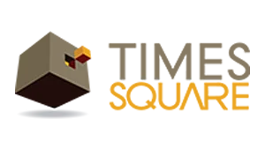

Civil work and waterproofing,
done right.
From structural repair and civil restoration to leakage investigation and final waterproofing execution, we provide one coordinated solution for residential, commercial and large-scale properties.
experience
assessment
services
Civil expertise.
Waterproofing precision.
Seal Kraft is a civil and waterproofing consultancy focused on understanding the condition of a property before recommending the right repair or protection system.
From structural repairs, concrete restoration and crack treatment to terraces, basements, external walls, water tanks and complex leakage conditions, our work connects the building’s repair needs with long-term waterproofing performance.
Discover Seal Kraft →Solutions for every
waterproofing challenge.
Digital Thermal Detection
Get a clearer, evidence-based understanding of hidden moisture problems before repair work begins. A combined thermal and moisture assessment maps temperature changes, air leaks, insulation gaps and damp areas without unnecessary damage, helping identify where to investigate and where to take precise readings.
After the inspection, you receive documented findings that show the suspected source, the affected area and the recommended next step. Visual and thermal evidence can also be used to confirm that repairs have addressed the problem, giving you confidence that moisture, mould and deterioration risks are being properly resolved.
Explore thermal inspection ↗Bathroom Waterproofing
Protection for bathrooms, wet areas, plumbing zones and adjoining walls/floors.
02↗Building Waterproofing
Comprehensive waterproofing strategy for residential and commercial buildings.
03↗Basement Waterproofing
Leakage control for basements, retaining walls and below-ground structures.
04↗Balcony Waterproofing
Treatment of balcony slabs, junctions, edges, drains and exposed surfaces.
05↗Chhajja Waterproofing
Repair and waterproofing of chhajjas, projections and vulnerable external details.
06↗Commercial Waterproofing
Planned waterproofing solutions for offices, retail, hotels and commercial assets.
07↗Concrete Waterproofing
Protection of concrete surfaces and critical construction joints from water ingress.
08↗Dead Wall Waterproofing
Damp-wall and blind-wall solutions designed around the source of moisture.
09↗Jacuzzi Waterproofing
Specialist waterproofing for jacuzzi and wet-area structures.
10↗Podium Waterproofing
Waterproofing systems for podium slabs, parking areas, gardens and decks.
11↗PU Grouting
Targeted injection grouting for active leaks, cracks, joints and difficult-to-access areas.
12↗Swimming Pool Waterproofing
Water-retaining structure waterproofing and leakage-control solutions.
13↗Terrace Waterproofing
Assessment and waterproofing of terraces, roofs, parapets, drains and joints.
14↗Wall Crack Waterproofing
Diagnosis and sealing of cracks that permit moisture ingress.
15↗Water Tank Waterproofing
Water-retaining tank waterproofing with attention to substrate and detailing.
16↗Structure Repair
Repair planning for damaged concrete, cracks, exposed reinforcement and deterioration.
17↗Thermal Leak Detection
Non-destructive investigation to help locate hidden moisture and leakage paths.
18↗External Wall Waterproofing
Weather-facing wall protection against rain penetration and dampness.
19↗Expansion Joint Waterproofing
Detailing and sealing of movement joints where conventional coatings can fail.
Trusted by
reputed organisations.
Selected client identities and partner marks can be displayed here. More logos can be added as you provide them.

Got a leakage
problem?
Tell us where the problem is. We'll help you decide the right next step.